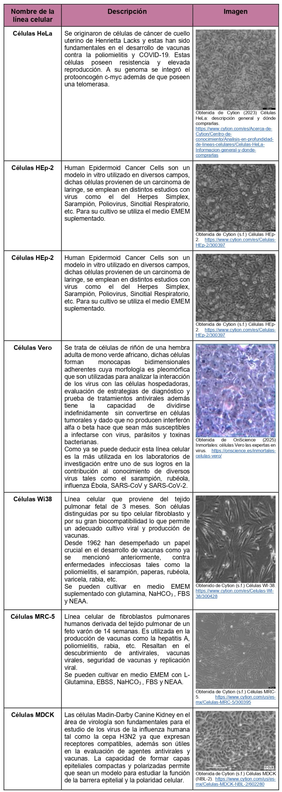
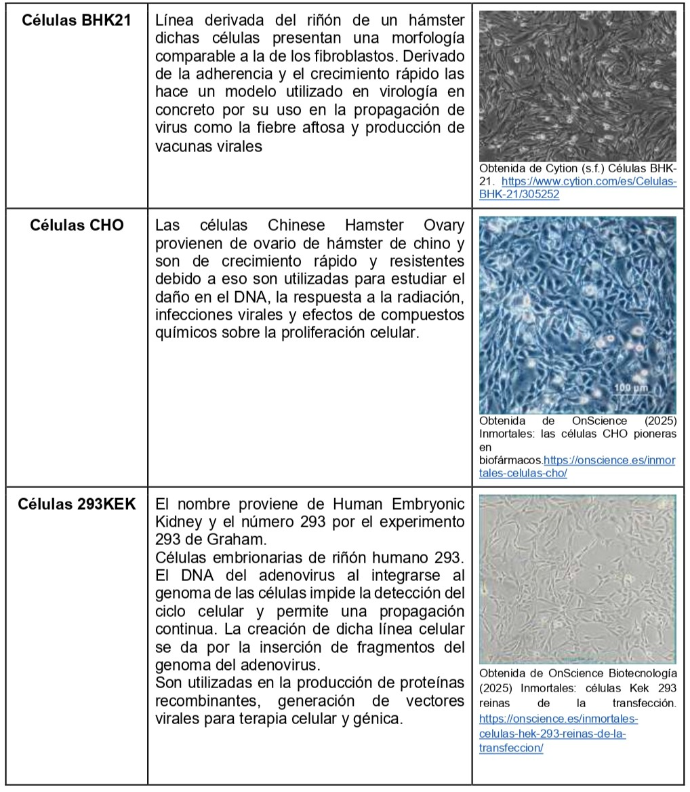

Líneas Celulares en el Estudio Viral


Molecular Devices (s.f.)En el contador de células: Células HEK293-GFP. https://es.moleculardevices.com/applications/cell-counting/cell-counter-hek293-gfp-cells/p>
OnScience Biotecnología (2025) Inmortales: células Kek 293 reinas de la transfección. https://onscience.es/inmortales-celulas-hek-293-reinas-de-la-transfeccion/
Cytion (s.f.) Células HEp-2. https://www.cytion.com/es/Celulas-HEp-2/300397
Shubach, J. & Et.Al. (2013) Cultivo de la línea celular HEp-2: doblaje poblacional y coloración con Giemsa. Perspectivas para el estudio de la infección con Chlamydia trachomatis. http://www.scielo.org.co/scielo.php?script=sci_arttext&pid=S1794-24702013000200003
Cytion (s.f.) Células WI-38. https://www.cytion.com/es/Celulas-WI-38/300428
OnScience (2025) Inmortales: células Vero las expertas en virus. https://onscience.es/inmortales-celulas-vero/
Cytion (s.f.) Células MRC-5. https://www.cytion.com/us/es-mx/Celulas-MRC-5/300395
Cytion (s.f.) Células MDCK (NBL-2). https://www.cytion.com/us/es-mx/Celulas-MDCK-NBL-2/602280
Cytion (s.f.) Células BHK-21. https://www.cytion.com/es/Celulas-BHK-21/305252
OnScience (2025) Inmortales: las células CHO pioneras en biofármacos.https://onscience.es/inmortales-celulas-cho/
Cytion (2023) Células HeLa: descripción general y dónde comprarlas. https://www.cytion.com/es/Acerca-de-Cytion/Centro-de-conocimiento/Analisis-en-profundidad-de-lineas-celulares/Celulas-HeLa-Informacion-general-y-donde-comprarlas